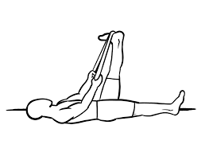
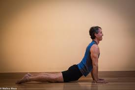
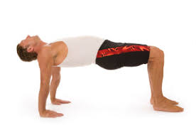

Yoga for Everyone
Improve flexibility and reduce stress with yoga.
Here are 5 Yoga Practices
1: SEATED SPINAL TWIST
Instructions: Sit in sukhasana or a simple crossed leg position. Inhale and raise the left arm. Exhale, place the left hand on the right knee, and the right hand on the hip for support. Inhale and return to the center facing forward. Repeat on the other side.

HAMSTRING STRETCH WITH BELT
Instructions: Lying on the back, raise the left leg and place the center of a belt or towel around the arch of the left foot. Keeping the right leg on the floor, raise the left leg toward the ceiling as high as you comfortably can. Hold for 5 breaths. Repeat on the other side. Contraindications: Knee injuries, ligament injuries
SNAKE POSE
Instructions: Lie flat on the stomach with the legs straight and the feet together. Interlace the fingers behind the back and place the chin on the ground. Inhale and raise the chest, keeping the gaze straight ahead. Imagine the hands are being pulled from behind. Stay here and breathe. Hold this for as long as you are comfortable, even if it’s for just a few seconds. Come down, take a few breaths and come up again.
TABLE TOP POSE
>Instructions: Standing with the feet together, inhale and raise the arms above the head. Exhale and bend at the waist, extending the arms straight out. The body should form a 90-degree angle. Stay here and breathe. Contraindications: Spinal injuries
CORPSE POSE
Instructions: Lie flat on the back with arms relaxed on either side of the body, palms facing upward. The legs should be sprawled outward and the feet apart. The head and neck should be aligned. Inhale and exhale and relax the entire body. To further deepen the relaxation, actively contract and relax different parts of the body.